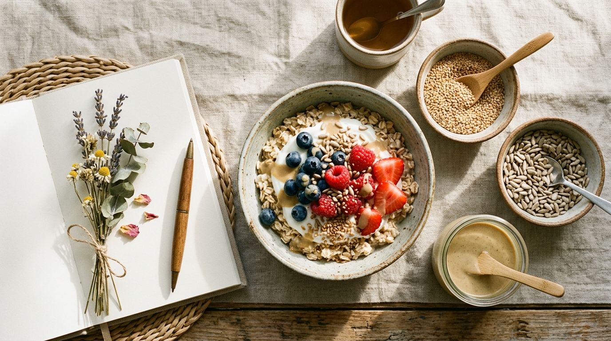

Hormonelle Balance und Seed Cycling: Die Rolle von Sesam in der Lutealphase
Wie die gezielte Rotation von Sesamsaat und Sonnenblumenkernen den Progesteronaufbau fördert, überschüssiges Östrogen reguliert und PMS-Beschwerden auf natürliche Weise lindert.

„Der weibliche Körper durchläuft jeden Monat ein biochemisches Meisterwerk. Ein stabiler und beschwerdefreier Zyklus hängt maßgeblich davon ab, dass Östrogen und Progesteron zum richtigen Zeitpunkt im optimalen Verhältnis zueinander ausgeschüttet werden.“
Chronischer Alltagsstress, hochverarbeitete Nahrung, hormonaktive Umweltchemikalien (Xenoöstrogene) und Schlafmangel bringen dieses empfindliche Zusammenspiel jedoch immer häufiger aus dem Takt. Die Konsequenzen kennen Millionen Frauen: Prämenstruelles Syndrom (PMS), schmerzhafte Brustspannen, plötzliche Wassereinlagerungen, depressive Verstimmungen und unregelmäßige Monatszyklen. In der funktionellen Ernährung hat sich das Seed Cycling als evidenzbasierte, sanfte Methode etabliert, um den Organismus mit maßgeschneiderten Mikronährstoffen in seiner Selbstregulation zu unterstützen.
1 Das Prinzip des Seed Cycling: Wie funktioniert die Rotation?
Seed Cycling nutzt die synergistischen Eigenschaften ausgewählter Ölsaaten, abgestimmt auf die zwei fundamentalen Phasen des weiblichen Menstruationszyklus:
Phase 1: Follikelphase
Startet mit dem ersten Tag der Menstruationsblutung und reicht bis zum Eisprung.
Fokus: Sanfter Östrogenaufbau & Unterstützung der Follikelreifung.
Phase 2: Lutealphase
Beginnt unmittelbar nach dem Eisprung und endet mit dem Einsetzen der nächsten Periode.
Fokus: Progesteronsynthese & Abbau überschüssigen Östrogens.
Während in der ersten Phase der Aufbau der Gebärmutterschleimhaut stimuliert wird, benötigt der Körper in der Lutealphase gezielte Cofaktoren, um das Hormon Progesteron stabil zu halten und eine relative Östrogendominanz abzuwenden.
2 Die Biochemie der Lutealphase: Warum Progesteron und warum Sesam?
Nach dem Eisprung wandelt sich der verbliebene Follikelrest in den sogenannten Gelbkörper (Corpus luteum) um. Dieser winzige, aber hochaktive Drüsenkörper schüttet nun mit Hochdruck Progesteron aus.
Progesteron ist das natürliche „Wohlfühl- und Entspannungshormon“ der Frau: Es moduliert hemmende GABA-Rezeptoren im zentralen Nervensystem, fördert tiefen REM-Schlaf, dämpft diffuse Ängste und verhindert, dass Gewebe übermäßig Wasser einlagert. Bleibt die Gelbkörperaktivität unzureichend oder kann die Leber altes Östrogen nicht zügig eliminieren, kippt das Verhältnis – es entsteht eine Östrogendominanz, die Wurzel fast aller prämenstruellen Beschwerden.
Die 3 biochemischen Wirkungsachsen von Sesam:
A. Phytoöstrogene Lignane (Sesamin & Sesamolin)
Sesam ist die weltweit ergiebigste Quelle spezieller Furofuran-Lignane. Im Kolon wandeln nützliche Darmbakterien diese Pflanzenstoffe in bioaktives Enterolacton um.
- Adaptogene Rezeptormodulation: Bei zirkulierendem Östrogenüberschuss besetzen Lignane kompetitiv die humanen Östrogenrezeptoren (ER-alpha und ER-beta), entfalten aber nur einen Bruchteil der hormonellen Signalstärke. Sie wirken wie ein natürlicher Dämpfer.
- Stimulierung der Leber-Clearance: Sesamin kurbelt Phase-I- (CYP1A2) und Phase-II-Entgiftungsenzyme in den Hepatozyten an. Östrogen wird gezielt über den gutartigen 2-Hydroxyöstron-Pfad abgebaut und über die Galle ausgeschieden.
B. Bioverfügbares Zink zur Progesteronsynthese
Die Zellen des Gelbkörpers weisen eine der höchsten Stoffwechselraten des weiblichen Körpers auf. Um über 12 bis 14 Tage kontinuierlich Progesteron zu synthetisieren, benötigt das Enzymsystem enorme Mengen an Zink. Ein latenter Zinkmangel führt oft zu einer verkürzten Lutealphase (Lutealinsuffizienz). Sesam zählt mit ca. 7–8 mg Zink pro 100 g zu den potentesten pflanzlichen Quellen überhaupt.
C. Die Calcium-Magnesium-Matrix gegen Krämpfe (Dysmenorrhoe)
In den Tagen unmittelbar vor der Menstruation sinkt die intrazelluläre Magnesiumkonzentration physiologisch ab, während inflammatorische Prostaglandine (PGF2a) zunehmen. Dies führt zu schmerzhaften Spasmen des Myometriums (Gebärmuttermuskel). Das ausgewogene, natürliche Mineralstoffverhältnis von Sesam entspannt die glatte Muskulatur und mindert Unterleibskrämpfe nachhaltig.
3 Das Seed-Cycling-Protokoll: Phase 2 im Überblick
Integrieren Sie die Saaten täglich fest in Ihre Morgen- oder Mittagsroutine. Die folgende Matrix fasst die exakten Dosierungen und physiologischen Aufgaben zusammen:
| Komponente | Tagesdosis | Aktive Leitsubstanzen | Hormonelle Funktion |
|---|---|---|---|
| Sesam (oder reines Tahin) |
1 EL frisch gemahlen oder 1–2 TL Tahin |
Sesamin, Sesamolin, Zink, Calcium, Lignane | Moduliert Östrogenrezeptoren, fördert hepatischen Abbau, unterstützt Gelbkörper & mindert Krämpfe. |
| Sonnenblumenkerne | 1 EL gemahlen | Vitamin E (Tocopherole), Selen, Phytosterine | Schützt Progesteron vor oxidativem Abbau, stärkt die Gefäßversorgung des Corpus luteum. |
| Einnahme-Zeitraum | Tag 15 bis Tag 28 des Zyklus (bzw. ab 1 Tag nach Eisprung bis Menstruationsbeginn) | ||
4 Ganze Saat vs. Steinmühlen-Tahin: Der Schlüssel der Bioverfügbarkeit
Ein weit verbreiteter Fehler beim Seed Cycling ist der Verzehr ganzer, unzerkauter Samen. Sesamsamen besitzen eine widerstandsfähige, wachsartige Zelluloseschale. Werden die Samen nicht gründlich zerkaut oder zuvor frisch geschrotet, passieren sie das Magen-Darm-Trakt-System weitgehend unverdaut – die wertvollen Lignane und Mineralien verbleiben im Inneren.
Frisch gemahlene Saat
Saaten sollten immer in kleinen Portionen frisch in einer Kaffeemühle geschrotet und dunkel im Kühlschrank gelagert werden, um die Oxidation der ungesättigten Fettsäuren zu verhindern.
Steinvermahlenes Tahin (Sesammus)
Durch das traditionelle Mahlen zwischen Granitsteinmühlen wird die pflanzliche Zellmatrix mikrofein aufgebrochen. Die Lignane und das Zink sind für die Darmzotten sofort maximal bioverfügbar – ganz ohne Aufwand.
Worauf es bei Tahin ankommt:
Achten Sie darauf, dass das Sesammus nicht hochtourig mit industriellen Metallwalzen unter starker Hitzeeinwirkung gepresst wurde, da Hitze die empfindlichen Sesamin-Strukturen zersetzen kann. Hochwertiges, schonend hergestelltes Steinmühlen-Tahin aus sortenreinem ägäischem Goldsesam (wie das von Anadoa Naturhaus) bietet die reinste, enzymschonende Matrix für Ihr tägliches Hormon-Protokoll.
5 Praktische Rezeptideen für die Lutealphase
So integrieren Sie Ihre tägliche Portion Sesam und Sonnenblumenkerne genussvoll in den Alltag:
Luteal-Porridge mit Tahin-Drizzle
Kochen Sie Haferflocken mit Mandelmilch auf. Rühren Sie 1 EL gemahlene Sonnenblumenkerne unter und toppen Sie die Schüssel mit frischen Beeren und 1 bis 2 TL cremigem Anadoa Tahin.
Cremiges Hormon-Balance Dressing
Verrühren Sie 2 TL Tahin mit 1 EL Zitronensaft, etwas warmem Wasser, einer Prise Meersalz und Kurkuma zu einem samtigen Dressing. Über Ofengemüse oder bunte Quinoa-Bowls geben und mit Sonnenblumenkernen bestreuen.
? Häufig gestellte Fragen (FAQ)
1. Wie lange dauert es, bis Seed Cycling spürbare Ergebnisse zeigt?
Da sich die Follikelreifung und der hormonelle Regelkreis über mehrere Monate einspielen, zeigen sich spürbare Veränderungen meist nach 2 bis 3 vollständigen Zyklen (ca. 60–90 Tage). Viele Anwenderinnen berichten dann von weniger Unterleibskrämpfen, vermindertem Brustspannen und einer spürbar ausgeglicheneren Stimmung vor den Tagen.
2. Kann ich statt ganzer Sesamsamen auch direkt Tahin (Sesammus) verwenden?
Ja, traditionell steinvermahlenes, schonend hergestelltes Tahin ist sogar besonders empfehlenswert. Durch das feine Vermahlen wird die zähe pflanzliche Zellmatrix bereits mechanisch aufgeschlossen, wodurch Lignane, Zink und Calcium für den Darm wesentlich leichter verfügbar sind als bei unvollständig gekauten ganzen Samen.
3. Ist Seed Cycling auch in den Wechseljahren oder bei unregelmäßigem Zyklus sinnvoll?
Ja. Frauen in der Perimenopause, Postmenopause oder bei unregelmäßigen Zyklen orientieren sich am Mondkalender: Von Neumond bis Vollmond werden Leinsamen und Kürbiskerne (Phase 1) verzehrt, von Vollmond bis Neumond Sonnenblumenkerne und Sesam (Phase 2).
4. Erhöht der Verzehr von Sesam den Östrogenspiegel zu stark?
Nein. Die Lignane im Sesam sind Phytoöstrogene mit modulierender, adaptogener Wirkung. Sie wirken wie sanfte Regulatoren: Bei zu hohem Östrogenspiegel blockieren sie überschüssige Rezeptoren; bei zu niedrigem Spiegel docken sie mild an. Sie beugen somit einer Östrogendominanz vor, statt sie zu verstärken.
5. Sollte Sesam für das Seed Cycling geröstet oder roh sein?
Für den Erhalt der hitzeempfindlichen Vitalstoffe und mehrfach ungesättigten Fettsäuren ist rohe, ungeröstete oder nur sehr mild schonend getrocknete Sesamsaat optimal. Stark geröstete Saaten schmecken zwar intensiver, haben jedoch durch die thermische Belastung einen Teil ihrer empfindlichen Lignan- und Vitaminprofile eingebüßt.

Natürliche Reinheit für Ihr Seed Cycling
Schonend steinvermahlenes Tahin aus 100% sonnengetrocknetem ägäischem Goldsesam. Frei von Palmöl, Zusatzstoffen und chemischen Zusätzen.
Zur Produktseite